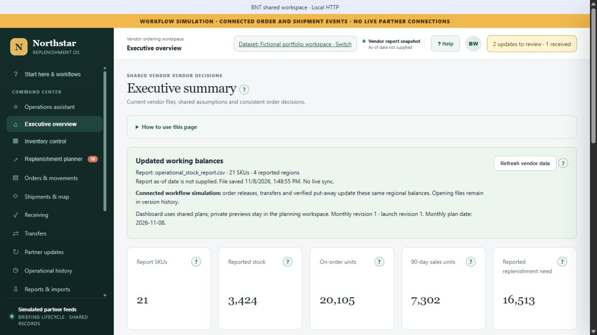
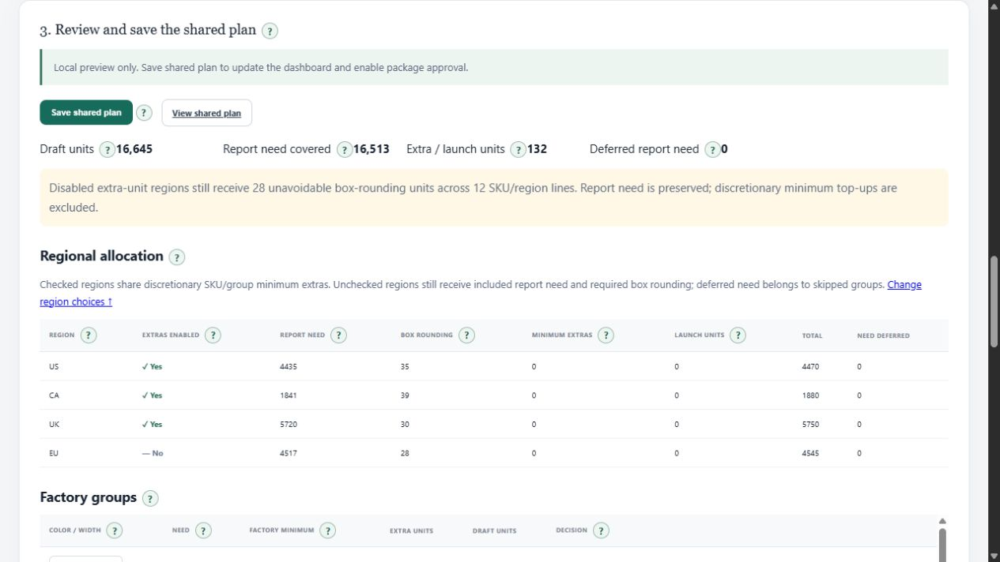
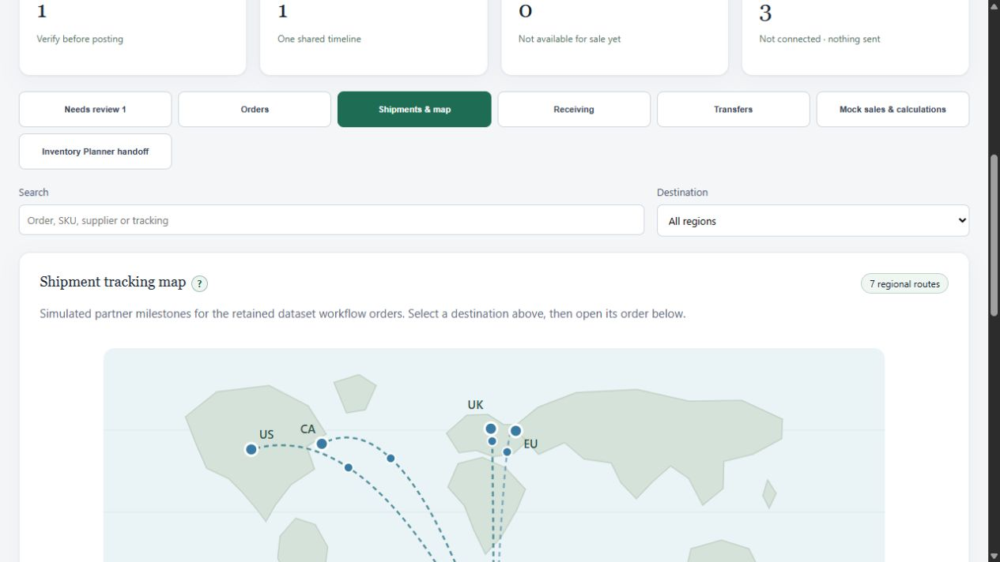
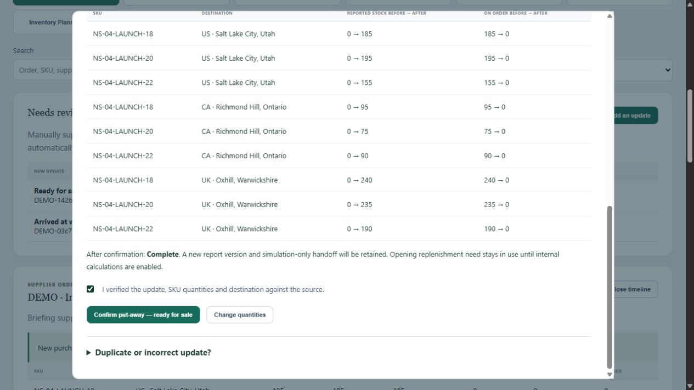
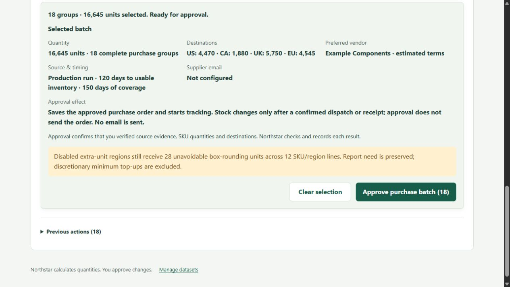

In development · Connected operations & AI
Northstar Control Tower
A working inventory and operations application connecting demand, planning, reviewed purchases, supplier progress, shipments, receiving, put-away, and reconciliation. An AI operations assistant helps inspect the work and prepare the next step.
- Role
- Product designer, data modeler, and application developer
- Platform
- JavaScript, Python, SQLite, and AI integration
- Current stage
- Connected local application with test partner feeds
- Public demo
- Full application tour with fictional sample records

Project evolution
From replenishment planning to connected operations.
Northstar grew from my Multichannel Replenishment Control Tower: a prototype for connecting demand, inventory, purchasing, and receiving decisions. As the work developed, I began connecting those decisions into a shared operating workflow.
The current application carries saved orders through tracking, receiving, and inventory updates. An operations assistant adds a way to ask questions, inspect supporting records, and prepare supported next steps.
This is how I learn: build around a practical problem, test the workflow, refine it, and use what I learn to explore what could come next.
The complete operating workflow
From demand and inventory to stock ready for sale.
The control tower connects decisions that are often separated across reports, order files, shipment updates, and warehouse checks. Executive summary, Inventory control, shared plans, and Orders & movements use the same working records.
- Understand the need. Inspect product/region stock, inbound, demand, coverage, and purchasing-group calculations.
- Prepare the plan. Preview monthly replenishment or an initial launch; review minimums, pack rounding, regional choices, and launch alternatives.
- Approve an exact package. Save the shared revision, inspect the four matching files, and approve against its retained inputs and settings.
- Follow the order. Connect supplier acknowledgement, production, shipment milestones, maps, and source updates to its timeline.
- Verify and put away. Review accepted and damaged quantities, then confirm ready-for-sale stock separately from the warehouse count.
- Close the loop. Retain the resulting report version, movement history, and reconciliation handoff. Recalculate report fields when internal calculations are enabled.
In the fictional tour, confirming put-away moves 1,460 units from on order into sellable stock: 3,424 becomes 4,884. The application retains the package, delivery references, confirmations, and earlier source versions behind that change.
Across the whole application
The main decisions, and the tools around them.
- Inventory and planning: executive overview, searchable positions, calculation details, monthly ordering, initial launch, regional allocation, and retained approval packages. Explore planning →
- Operational execution: order timelines, supplier/carrier updates, shipment maps, receiving, discrepancies, put-away, and protected warehouse transfers. Follow the operation →
- Data and control: separate datasets, source versions, reports and exports, validated imports, internal calculations, reconciliation, connection status, operational history, and contextual help. Explore supporting tools →
- AI and business settings: the operations briefing, scoped questions and evidence, reviewed action batches, grouped activity, sourcing, planning times, notification preferences, and vendor/product controls. Explore the assistant →
- Network intelligence: separately labeled supplier, marketplace, returns/quality, and growth-scenario simulations. Inspect the simulations →
The six-chapter tour covers the complete application. It spends more time on consequential decisions and the assistant, with shorter stops for smaller tools.
AI integration
An assistant grounded in the work.
The assistant is one part of the wider operations system. It summarizes the selected workspace, explains supporting records, runs bounded application checks, and prepares supported next steps. The existing engine supplies purchasing quantities.
- Review the evidence. Explain records and flag issues using the selected workspace’s supporting information.
- Prepare a next step. Run supported checks and prepare actions while the existing planning engine supplies purchasing quantities.
- Keep approval explicit. Selection, inspection, and execution stay separate. Quantities, destinations, source/timing, consequences, and warnings remain visible beside approval. The assistant cannot approve its own proposals.
- Follow the outcome. Group recent progress by order or batch, with the retained timeline and audit evidence available on request.
- Keep working through failures. Deterministic planning and operational records remain useful when live AI is unavailable; missing evidence is not presented as a known zero.
What I’m learning
Useful automation needs context and clear controls.
The interesting challenge is making AI useful inside a workflow people can understand and trust. That means showing where an answer came from, preserving business rules, checking whether information has changed, and making the approval and outcome visible.
Current development stage: Supplier, carrier, warehouse, and notification connections use test adapters. They exercise the application workflow without placing real partner orders or sending live notifications. The full tour uses captures of the actual application in isolated fictional workspaces. Its receipt and put-away sequence exercises the persisted workflow. Live AI is disabled during capture; the question interface is shown before submission, with no invented assistant answer.
Current application
Inspect the decision. Follow its effect.
Four stops from the full 49-screen tour. Every capture uses fictional records; partner activity remains labeled as simulated.




Earlier prototype: workflow, screens, and system design
Original design challenge
Turn fragmented inventory signals into controlled replenishment decisions.
A multichannel operation can hold inventory across regional 3PL locations and marketplace fulfillment networks while supplier lead times, inbound shipments, reserved stock, demand velocity, and receiving exceptions are changing at the same time.
The operating problem is not simply showing inventory. The system needs to explain why an action is recommended, distinguish supplier purchasing from network transfers, preserve human approval, and leave a traceable record of every decision.
Original prototype
One operating view from demand signal through approved replenishment action.
I designed the control tower as an offline demonstration environment with deterministic synthetic data. The interface brings executive monitoring, inventory positions, replenishment logic, purchase orders, FBA transfers, shipments, receiving, supplier performance, marketplace issues, scenarios, automation controls, and audit history into one workflow.
- 144 synthetic products across four regional 3PLs and four Amazon FBA marketplaces
- 1,152 inventory positions with searchable position-level detail and risk classification
- Separate supplier purchase-order and 3PL-to-FBA transfer recommendations
- Explainable reorder point, safety stock, target inventory, MOQ, and case-pack logic
- Approve, modify, reject, defer, and bulk-approve decision workflows
- Shipment tracking, receiving discrepancy resolution, supplier performance, and marketplace issue handling
- Adjustable growth, channel-mix, lead-time, service-level, and planning-horizon scenarios
- Manual, assisted, and controlled-batch operating modes with dry-run safeguards and audit history
Earlier prototype walkthrough
From inventory exposure to governed execution.
These views show the earlier synthetic control tower. They document the planning and approval workflows that formed the starting point for Northstar; they do not show its current operations assistant.
System design
Production-style boundaries without pretending the prototype is production.
The source dataset is generated from a fixed seed into a normalized SQLite database, then exported to browser-readable JavaScript and JSON snapshots. The UI reads through that data adapter so the browser demonstration remains self-contained and makes no network calls.
Workflow decisions persist only in local browser storage. The source SQLite data remains unchanged, allowing the operating dataset to be regenerated deterministically. That separation mirrors a future architecture where the local adapter can be replaced by a Flask service or authenticated API without redesigning the user workflow.
Decision logic
Recommendations remain inspectable before they become actions.
Inventory details expose on-hand, reserved, damaged, quarantined, confirmed inbound, current and projected days of supply, reorder point, target inventory, and net requirement. Recommended quantities are then adjusted to supplier MOQ and case-pack rules.
The recommendation drawer explains the calculation in plain language before an analyst approves or modifies it. Approved actions can then be grouped into a controlled review batch. Release is simulated and audited, but no supplier, Amazon, freight, email, or marketplace transaction is sent externally.
Synthetic operating scale
Large enough to expose real workflow and prioritization problems.
The demonstration dataset is calibrated to an established specialty-accessories business with approximately 238,000 annual synthetic units, about $6.2 million in synthetic revenue, and a channel mix weighted toward marketplace fulfillment.
Those values are planning assumptions rather than company claims. The purpose is to make the interface behave like an operating system with enough volume, exceptions, and competing priorities to demonstrate realistic decision support.
Portfolio note